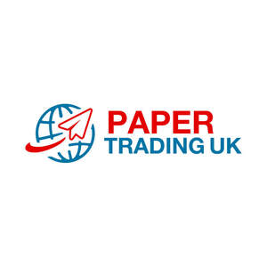
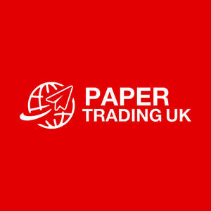

Trade Mark Journal No.2025/032 8 August 2025
UK00004201390 9 May 2025 (9,16,35,39,40,42,44)
Mark 1
Mark 2

Mark 3

- Class 9
- Computer software for managing paper stock, distribution, and sales; electronic tracking and tracing systems for paper distribution; computer software, using artificial intelligence-based solutions for packaging logistics and supply chain management; Automation software for industrial packaging processes; Software for designing, testing, and optimising packaging; computer software for managing packaging stock, logistics, and sales; electronic tracking systems for packaging shipments; artificial intelligence-based software for packaging operations.
- Class 16
- Packaging materials made of paper and cardboard; wrapping paper; adhesive tapes; printed labels; tissue paper; shredded paper; envelopes; postal packaging; till rolls; A4 copy paper; printed packaging materials; cartons; packaging solutions, namely, Paper and cardboard, packaging materials, paper and plastic film for wrapping, cardboard boxes, packaging containers, plastic bags for packaging and plastic material for packaging, Plastic bubble packs for wrapping or packaging; Paper and cardboard; printed matter; stationery; office supplies, stationery, paper, envelopes, writing instruments, notebooks, files and folders, office paper clips and fasteners, staplers and staples, office organisers, desk accessories, and office requisites (except furniture) Stationery, paper, envelopes, writing instruments, notebooks, files and folders, office paper clips and fasteners, staplers and staples, office organisers, desk accessories, and office requisites (except furniture) ; wrapping paper; tissue paper; cardboard sheets; packaging materials made of paper; printed packaging materials; labels; stickers; adhesive paper products for packaging; cartons; paper-based container; Toilet paper; paper towels; tissues; napkins; kitchen rolls; industrial wiping paper; centrefeed rolls; wrapping paper; bulk paper rolls; core board; paper and cardboard goods; labels; cartons.
- Class 35
- Retail services in relation to paper, packaging materials, stationery, and office requisites (except furniture) and chemical adhesives, coatings for paper, adhesives for use on paper, all of the aforesaid services also provided via the internet; wholesale services in relation to paper, packaging materials, stationery, and office requisites (except furniture) and chemical adhesives, coatings for paper, adhesives for use on paper, all of the aforesaid services also provided via the internet; import and export services in relation to paper, packaging, and printing materials; procurement services for paper and packaging materials; brokerage and commercial trading services for paper and paper goods; business consultancy in the field of paper trading and packaging solutions; advisory and business consultancy services for supply chain optimisation in the paper and packaging industry; marketing and promotion of paper and packaging products; consultancy relating to eco-friendly and cost-effective sourcing of paper products; advisory services relating to responsible and sustainable sourcing of raw materials; Business management consultancy and advisory services relating to transparent procurement and client liaison; tailored solutions and expert consultation for purchasing paper stock.
- Class 39
- Distribution, warehousing, and storage of paper and packaging materials; freight transportation of paper and packaging materials; consultation on logistics management in the paper and packaging industry; supply chain logistics and reverse logistics services; coordination and scheduling of delivery from mills to customers; reliable logistics and seamless coordination of orders.
- Class 40
- Treatment of materials; processing of paper and cardboard; Paper treatment, laminating, cutting, folding, and processing; conversion of paper materials into rolls and sheets; custom paper converting services; manufacturing of finished or semi-finished paper products; Processing of paper and cardboard; Paper treatment, laminating, cutting, folding, and processing; conversion of paper materials into rolls and sheets; custom paper converting services; manufacturing of finished or semi-finished paper products. .
- Class 42
- Design and development of industrial paper converting processes; research and development in paper processing techniques; consultancy in sustainable materials for paper conversion; Consultancy services relating to quality control and compliance in the field of paper products; environmental consultancy relating to paper and packaging; research and analysis relating to paper procurement and environmental impact; software development in relation to supply chain management for packaging and paper products; expert technical consultancy in sustainable sourcing practices; advice relating to transparency and eco-compliance in the paper industry. .
- Class 44
- Consultancy relating to eco-friendly packaging and sustainability in the paper and packaging industry; advisory services on biodegradable and recyclable packaging solutions; Advisory services on biodegradable and recyclable paper-based products.
PAPER TRADING UK LTD
Representative: JOSH-IP.LAW